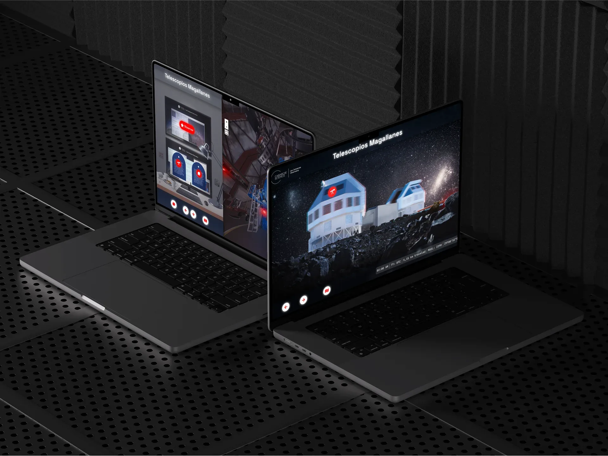
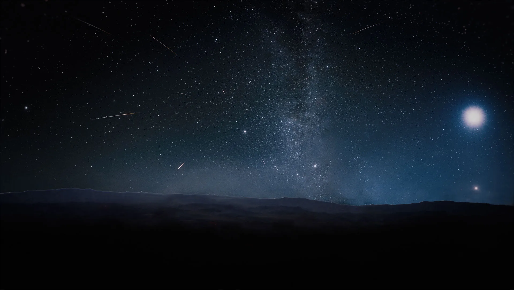
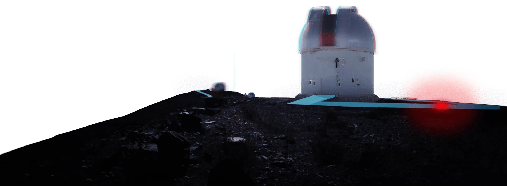
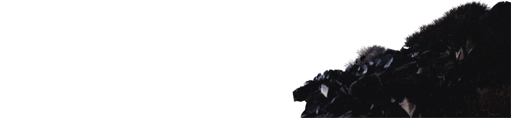

Visita LCO
Para el 50.º aniversario de la primera luz del Observatorio Las Campanas, diseñé y desarrollé un recorrido virtual que recrea una noche de observación. El sitio abre áreas que normalmente están cerradas al público. En dos años llegó a 1900 usuarios en 52 países, y uno de cada cuatro completó el recorrido.

El problema
Un observatorio trabaja de noche y la mayoría de sus instalaciones no se pueden visitar. Para el aniversario, el objetivo era que cualquier persona, desde cualquier país, viviera una noche de observación y conociera lo que ocurre en su interior.
Ayudé a definir el proyecto, su alcance y sus objetivos. Después asumí todo el diseño y desarrollo, y tomé las fotos y los panoramas 360° del observatorio.
Proceso
- 50 años de primera luz
- 1Alcance y objetivos
- 2Arquitectura de información
- 3Wireframes
- 4Fotografía y panoramas 360°
- 5Desarrollo e interacciones
La estructura
El recorrido sigue el orden de una noche real de observación, así que la navegación se lee como un viaje y no como un menú.
- 1Inicio
- 2Llegada al observatorioInfo del observatorio
- 3Camino a las cúpulasActividad interactivaInfo del sitio
- 4Henrietta SwopeSala de controlInfo del telescopioTelescopio 1
- 5Irénée du PontSala de controlInfo del telescopioTelescopio 2
- 6MagallanesSala de controlInfo de los telescopiosTelescopios 3
- 7SalidaObservatorio del futuroMensaje de cierre: proteger los cielos oscuros
- 8CierreValoración
Arquitectura de información: ocho escenas en el orden de una noche de observación.
La experiencia
Mis propios panoramas del observatorio, que también se pueden recorrer con un visor VR.
Interacciones que responden al movimiento del cursor y refuerzan la sensación de exploración.



Mueve el cursor por cualquier parteResultados
Medí dos objetivos con Google Analytics: dar acceso a las personas y enseñarles sobre el observatorio, y una interfaz lo bastante intuitiva para fomentar la exploración.
usuarios en dos años, empezando con 365 en el primer mes.
países alcanzados, frente a 19 en el primer mes.
visitantes completaron el recorrido entero: 26,1 % en dos años y 28,2 % en el lanzamiento.
de permanencia media por visitante en dos años, para un recorrido autoguiado. Quienes visitaron en el mes de lanzamiento se quedaron 3 min 56 s.
vistas por visitante de media, con 4,3 en el primer mes. Las personas recorrían varias escenas por visita.
visitantes abrieron contenido disponible solo en el recorrido, con 1904 vistas. En el primer mes, 136 visitantes y 582 vistas.
La tasa de finalización se mantuvo estable mientras el tráfico se multiplicaba por cinco. Quienes llegaron mucho después del lanzamiento también terminaron la experiencia.
Primer mes: del 7 de octubre al 7 de noviembre de 2021. Dos años: del 7 de octubre de 2021 al 3 de septiembre de 2023.